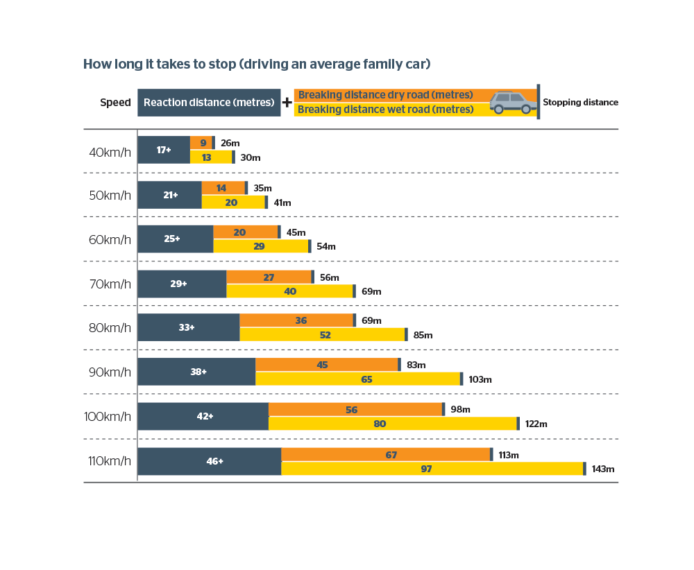
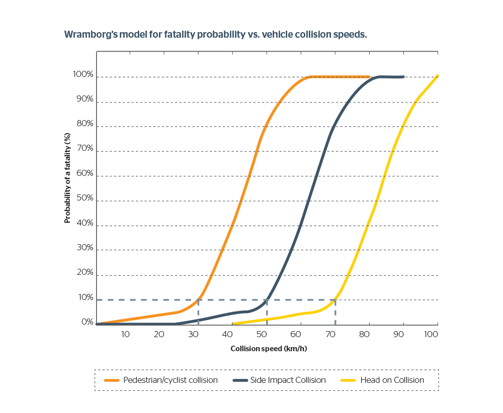

Safe Speeds
Speed limits are enforced to ensure that everyone is safe on the road. Especially since a wide diaspora of people (cyclists, pedestrians and motorcyclists) share the road. These people are at higher risk of injury or death in a potential collision.
The human body can only endure so much force and is limited in its reaction times. Hence speed limits are specifically chosen to suit the specific conditions of an area, such as density and road conditions to keep everyone safe.

The above image details the varying reaction times given the varying speeds of a family vehicle. Notice that reaction distance is a significant factor and that speed plays a crucial role in your ability to stop. (Royal Automobile Club Western Australia, 2020)
Reaction Time
Refering to the above image it becomes apparent that the relationship between speed and breaking time is not linear it is instead curved. For example on a dry surface the increase in the distance
taken to break from 40-50 km/hr is 9m. Whereas the distance taken to break from 100 km/h to 110 km/h is 18m. As such every km you are over the speed limit the time taken to break is accelerating at an increasing rate. This makes it vital that you travel at posted speed limits to give yourself enough time to break and avoid any potential injuries.
Try out the reaction test game I have coded click here. Reaction times and associated meters taken to break are:
| Time |
Meters taken to Break in a Normal Car travelling at 60 km/h |
| Less than 500ms |
28m |
| 500-600ms |
30m |
| 600-700ms |
31m |
| 700-800ms |
33m |
| 800-900ms |
35m |
| 900-100ms |
37m |
| More than a second |
38m |
Chance of Injury or Fatality

The image above denotes the probability of a fatality in relation to the speed travelled and type of collision endured. (Royal Automobile Club Western Australia, 2020)
The three most dangerous types of collisions on the road are, pedestrian/cyclist collisions, side impact collisions and head on collisions. For all three collisions the probability of fatalities increase rapidly
after exceeding 30, 50, 70 km/h respectively. This statistic stresses the importance of following the speed limit. Such drastic increases in the chance of death seem counter-intuitive making it ever so important that
drivers are aware of the dangers of exceeding the speed limit. If a fatality is caused on the road not only are people sadly dead but you run the risk of being put in jail for 2 years if you were exceeding the speed limit.
As such it is important to maintain the speed limit as every km/h past the speed limit drastically increases the chance of death.
External Factors
Finally more experienced drivers may be of the belief that given their experience they are at less risk of a collision and fatality. However this thinking negates the exsistence
of external factors. Crashes often involve two parties and as such if you are travelling over the speed limit and are involved in a crash caused by an external driver the chance of a death is still high.
Furthermore, driving is not always straightforward and given the number of motor vehicles in Australia the number of outcomes when you drive are extremely diverse. Being at the speed limit gives you the best chance
of avoiding a collision or death in the chance of a 'freak accident' which is not all that uncommon.